In this module, we have to work in group and make a machine, including the end effector, and then automate it. Then, each of us have to document the individual contribution.
Since it, here in Opendot, we are 10 students we decided to realize two machines, each consisting of two axes, so as to divide the tasks more easily.
One of the two machines that we decided to create is a lathe, and my task was to design the structure of the machine.
to draw the structure, they are largely absent from sketches left by my classmate Enrico Bassi that on paper gave me some idea of how it should have been the structure.
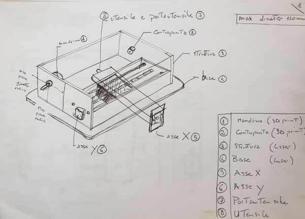
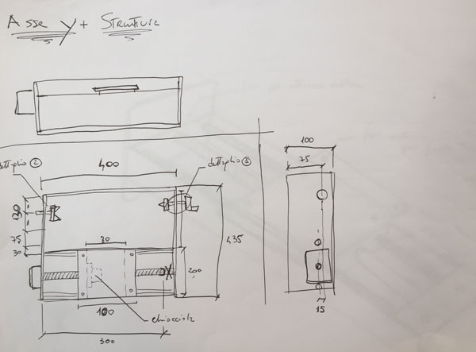
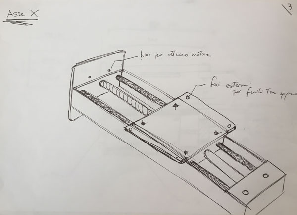
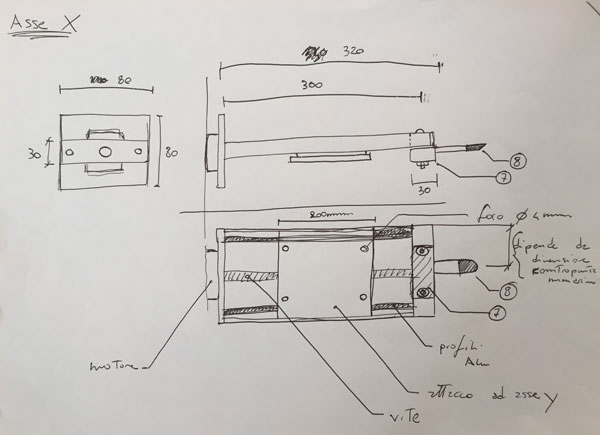
I started drawing the model of our lathe in Rhino, according to the approximate measurements of Enrico's draft and 4 mm thick plywood that we would like to use.
I started by designing first the y-axis of the machine, which is internal to the structure and which will flow on the x-axis.
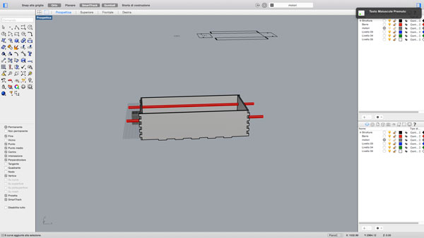
In addition to the support structure, I have designed the holes to fix the motor axis and those to insert the bars that serve as guides.
Then I started drawing the external structure, which blocks the y axis, which then will be set pieces that will block the material to be machined.
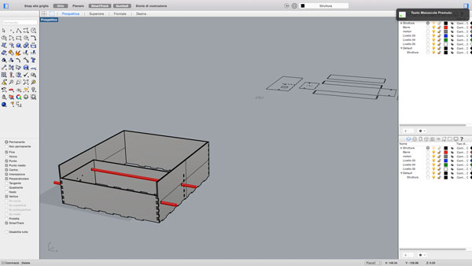
Once finish the support structure, I designed the x-axis and the carts that then are placed inside the axes.
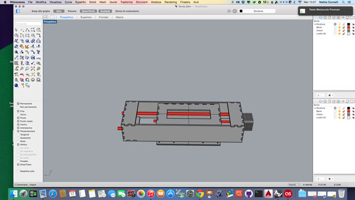
When ready both axes, I have placed as should in reality to check the size and spacing.
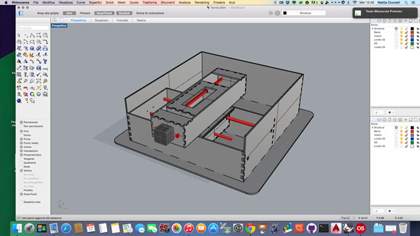
Once ready the main structure I imported 3D parts drawn from my classmate Gianluca Pugliese: in fact he he dealt with realize the tip, the tailstock and the crank to adjust the pressure on the material.
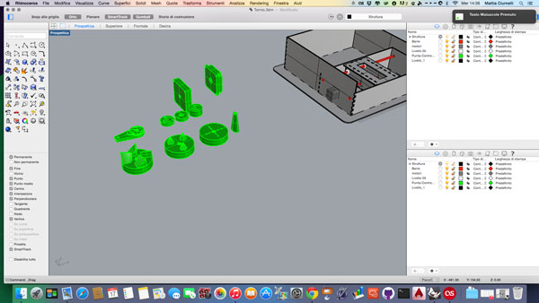
Once imported the 3D parts, I positioned in order that they were aligned with the x-axis, and at the end I prepared the holes to mount them on the structure.
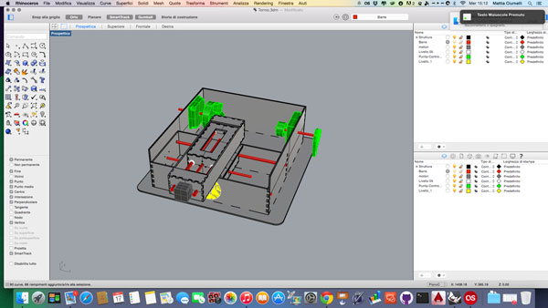
This is the view from the back
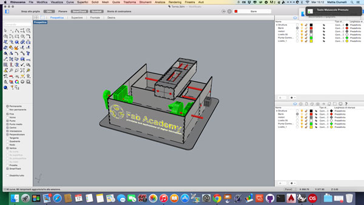
and this is the top view
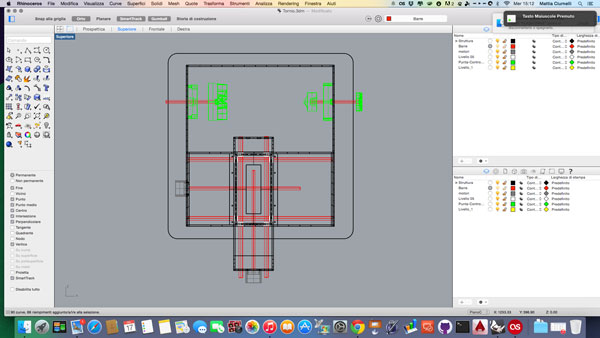
And this is a render of what we should get at the end.
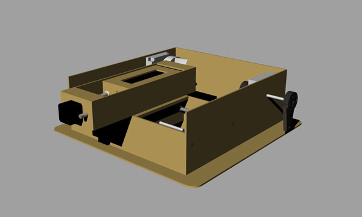
Once finished, I passed the file to my classmate Pierluigi, who worked to transform it in 2d and prepare to cut it with the laser.
Once ready the Pierluigi's file in 2d , we started cutting laser parts of the structure, using 2 plywood panels 900x600 mm of 4 mm thick, using 3 different layers: one for the written in engraving, one for the internal cuts and one for external cuts.
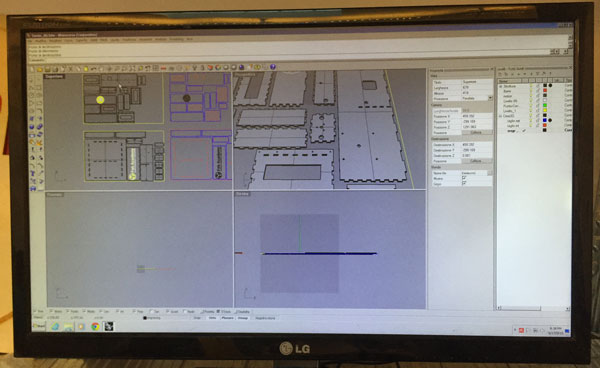
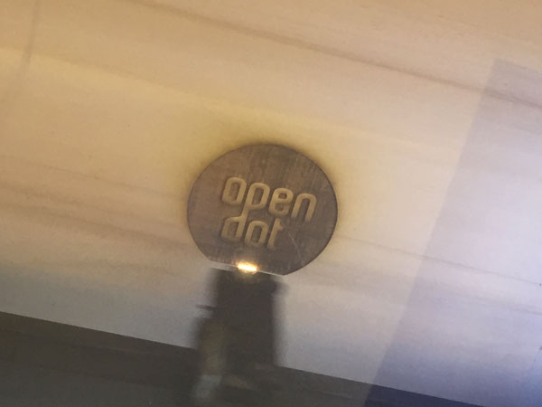
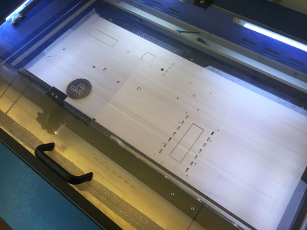
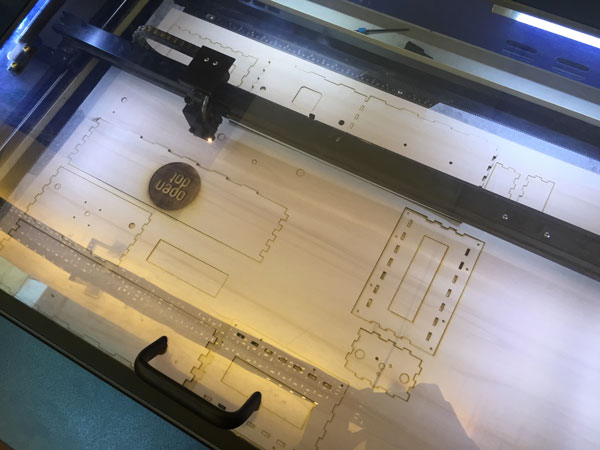
Once cut all the pieces, we have arranged on a plane and we got ready to assemble the machine
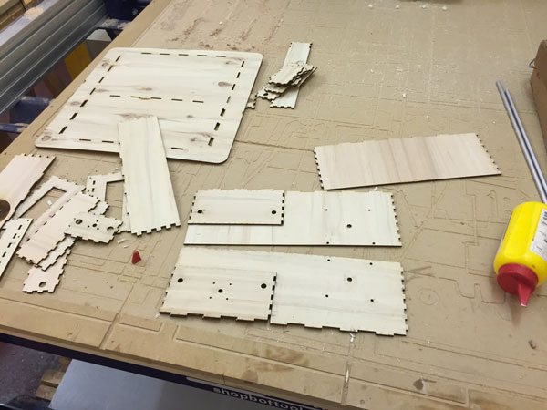
Here you can see some pictures of the assembly process
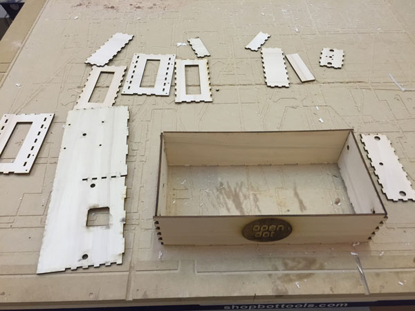
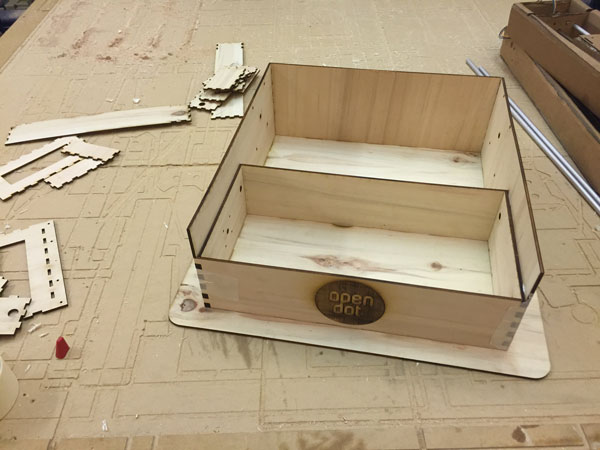
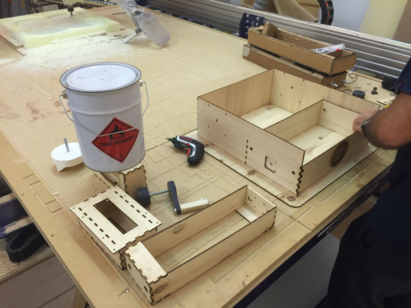
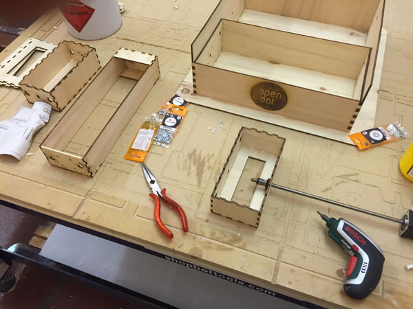
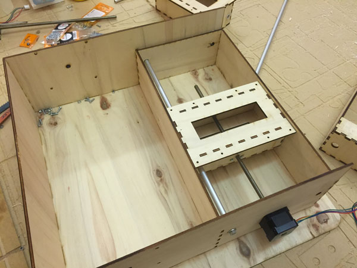
And this is the final result:
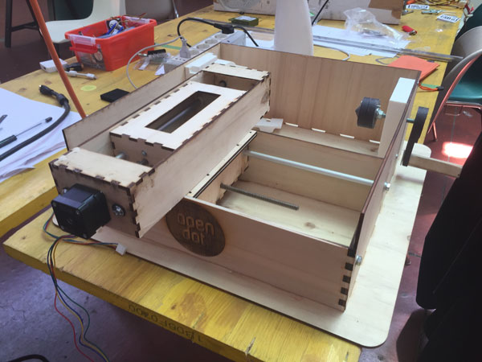